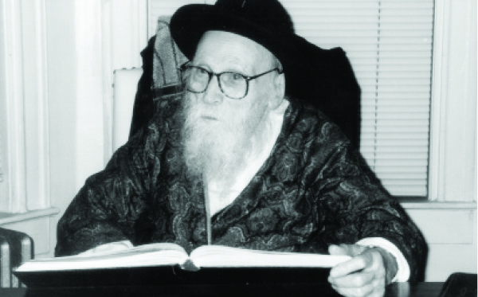

The Rebbe Testified to the Sincerity of His Belief in Moshiach
The Chassid, R’ Meir Avtzon, was the Rebbe Rayatz’s Shadar in Russia and did much to spread Judaism in Detroit. * To mark his passing on 29 Cheshvan 5762.
By Dov Levanon

“Two people helped me go to Yeshivas Tomchei T’mimim,” said R’ Meir. One of them was his melamed, who taught him for three years, R’ Levi Yitzchok Weichman, who used to travel to R’ Chaim Shneur Zalman of Liadi, and R’ Bentzion Rivkin, a great posek. “In the years that I knew him, he did not walk four cubits without Hemshech 5666. When he went to the slaughterhouse he learned Samech-Vav, when he sat at home he had with him Samech-Vav, and wherever he went, he took it with him,” said R’ Meir.
He learned Gemara until bar mitzva with the melamed, R’ Levi Yitzchok, who was the only melamed left in the town after the Revolution. The melamed, realizing he was bright, promoted him to the highest class within a few months. These were bar mitzva age boys who had learned Gemara for at least two years already while he was only eleven. After his bar mitzva, the melamed sent him to the yeshiva in Kiev and after that yeshiva was shut down, he returned home and learned by R’ Bentzion Rivkin.
R’ Meir Gurkov once went to the town on a recruiting mission for the yeshiva, and when he saw the boy he told him to join the yeshiva. R’ Levi Yitzchok tried his best to help. On Lag B’Omer 5686/1926, the boy found himself in Charkov where the central underground Yeshivas Tomchei T’mimim was located and was run by R’ Yechezkel Feigin and R’ Nissan Nemanov.
When everyone went to the Rebbe for Tishrei 5687, the yeshiva was closed. R’ Meir went with the yeshiva to Nevel where the yeshiva was established after the Yomim Tovim.
For Simchas Torah 5688, R’ Meir was among the hundreds of Chassidim who traveled to Leningrad to be with the Rebbe and to take leave of him, a day before he left Russia. It was the last time he saw the Rebbe Rayatz.
After he returned to Nevel, he was arrested and held for interrogation but was released after a few days. He remained in the yeshiva until 14 Kislev 5688, the day the authorities shut down the yeshiva. On Chanuka he was arrested again. The interrogators wanted to know whether he knew R’ Nissan. He was released after a day, but due to the persecution, he and the other bachurim left for Vitebsk.
After the Yevsektzia dogged the footsteps of the yeshiva in Kremenchug and the former mashgiach, R’ Berel Koznitzov had to run away, R’ Meir came to be the mashgiach of the yeshiva which was run by R’ Yisroel Noach Blinitzky. He had to arrange a place for the boys to eat teg (daily meals in the homes of the local Jews), as was customary in those days, and to give shiurim to some classes. The shiurim were given in several shuls. Right after the shiur, the boys would leave and meet up again to continue learning under his supervision in another shul. Every day R’ Meir visited several shuls. After a few months, he was caught in one of the shuls and had to leave the city.
He took some bachurim with him and they went to Vitebsk. On the way, while on the train, a gentile noticed that he was the leader of the boys and he began to threaten to inform on him. It turned out that this gentile came from a town near Mirgorod, R’ Meir’s hometown, and he knew his grandmother who was a doctor, so he left him alone.
After the closing of the yeshiva, R’ Meir remained in Moscow where a Lubavitch community had developed. Among his friends in those days were R’ Yaakov Moskolik (Zuravitcher), may Hashem avenge his blood, and R’ Avrohom Drizin (Maiyor), in whose house he lived.
In 5694, the Rebbe Rayatz told him to try and leave Russia and to submit a request to move to Riga or some other city in Latvia. His request was not approved.
INCARCERATION
AND TORTURE
In Elul 5695 R’ Meir was arrested when he went to the home of R’ Avrohom Maiyor. He did not know that the house was under surveillance (R’ Avrohom himself managed to sneak out of the house). He was taken along with six other Chassidim who were arrested the same night to the secret police headquarters, Lubianka, in Moscow, where he was tortured. The interrogators wanted him to supply information about who organized the chadarim and yeshivos, who taught in them, and who were the parents that sent their boys to these schools. R’ Meir kept quiet and did not tell them anything.
As soon as he arrived in jail, they took away his t’fillin and wanted to rip them open in order to see whether he had hidden gold coins inside. R’ Meir pleaded with them but the interrogator refused to listen until a Jewish interrogator by the name of Yakobovitz told him to leave the t’fillin alone since “he is not the type to hide valuables in his t’fillin.”
After the interrogations, he was transferred to the Butirka prison where he waited to be sentenced. In the verdict on a long list of charges that covered six pages, R’ Meir was found guilty, along with the other Chassidim arrested that night, of organizing learning for Jewish children in Malachovka and for teaching Talmud and the various commandments of the religion. Charges such as these could have resulted in a sentence of execution, but they were given a relatively lighter sentence of three years of exile in Kazakhstan.
At first, he was with the Chassidim R’ Yitzchok Goldin and R’ Eliezer Nannes, but after a few months he remained alone. Erev Yom Kippur, R’ Meir immersed in the river despite the great danger involved. Indeed, on Yom Kippur already he began to feel sick, and on Simchas Torah he walked to the hospital where he was diagnosed with intestinal typhus, a terrible plague at that time.
Even after the time for his official release arrived, the wicked ones tried in various ways to keep him in exile. It was only after he wrote to the Prosecutor General along with providing documents from the hospital that he was released.
Even after he returned to Moscow, his troubles weren’t over. Since he had hidden in the home of someone who ran the Chassidic underground in Moscow, he was arrested again and was left for three days without food until his release. Then he had to forge a passport so he could continue living in the city. After R’ Avrohom Maiyor left the city, R’ Meir became the leader of the secret community.
When the war broke out, he went with his fellow Chassidim to Tashkent where he married. In 5706, R’ Meir left the country via Lvov with a passport that said his name was Chaim Gasthalter. He then went to France.
When the Rebbe Rayatz passed away, R’ Meir was one of the first to sign a writ of hiskashrus to the Rebbe MH”M and became his faithful Chassid.
REPORTED IN THE PAPERS: A FAMILY WITH SIX CHILDREN
R’ Meir arrived in the United States in the beginning of the 1950’s. With the Rebbe’s consent, he settled in Detroit where he worked as a mashgiach of kashrus in a meat factory. He began reaching out to Jews, mainly the many Russian Jews who lived in Detroit. R’ Meir became “the Rebbe’s man” in Detroit, being responsible for all Chabad activities in the city from raising money for maamud to publicizing the Rebbe’s horaos and teaching Chassidus.
On 12 Tammuz 5723/1963, the Rebbe asked the shluchim to come up and get mashke from him. When some of them did not go up, the Rebbe said their names out loud: Where are the rest of the shluchim? Nissim Hayward? Meir Avtzon?
As an interesting aside, when R’ Meir arrived in America, there was an article that reported in shock the arrival of a bearded Jew with no fewer than six children!
In Detroit, besides being mekarev Russian Jews, R’ Meir also took in many of them who did not have a place to live. In his small home he tried giving each one special attention and was able to inspire many of them to increase their mitzva observance.
THE REBBE
RETURNED THE MONEY
In 5716, R’ Meir sent the Rebbe packages of s’farim. The Rebbe thanked him and asked how much they cost. The Rebbe, who knew that R’ Meir would not want him to pay, explained to him in his language, the language of a Chassid and mekushar, why he had to send the Rebbe a bill:
“I just received the packages of s’farim and thank you for the bother. Surely you will strengthen this good practice and also inspire the rest of Anash who will learn from you and do the same. Of course you will let me know the cost which will be covered immediately along with thanks. It is already known in matters such as this the instruction of the Rebbe [Rashab] that you must inform regarding the cost, for this is a segula to prevent someone from coming in the future and creating confusion. He answered in this way one of the Chassidim of the previous generation, a man of stature and one who was mekushar to him with all his heart and soul, and obviously, this person did so then and in the future.”
As to what kind of s’farim interested the Rebbe, the secretary, R’ Eliyahu Quint wrote R’ Meir: “Many thanks for the s’farim that you sent the Rebbe and surely you will act in haste in this matter in the future as well. The kind of s’farim: Kabbala, Halachic Responsa and the like, and any book that is not commonly available.”
R’ Meir started a shiur in Chassidus when he first arrived which was also attended by some talmidim from the local yeshiva. When he informed the Rebbe of the shiur, the Rebbe wrote, “A young married man and talmid of the yeshiva is not yet involved in the world of falsehood and so it is even more important to instill in him a spirit of yiras Shamayim and love for Hashem. How is this done? Through learning Chassidus and going in its ways.”
R’ Meir was a big talmid chacham and his Torah insights often appeared in the Torah journals of those days.
R’ Meir merited spiritual wealth and nachas from his children, but he did not have material wealth. His home was small and simple and he and his wife managed with little. One time, when he had yechidus, he said to the Rebbe that his children had come of age for shidduchim. He and his wife had never been worried about their financial state, but now they wanted to be able to pay at least for a modest wedding and dowry.
The Rebbe said: A material dowry comes and goes but a spiritual dowry is forever. Hashem endowed you with a special gift, the ability to provide your children with a spiritual dowry. This is a genuine dowry. You can say this in my name to your mechutanim when you sit down to discuss the agreed upon conditions.
In 5746, when his wife was sick and she had to be transferred to a place where she could get proper medical treatment, R’ Meir moved to Crown Heights and lived next door to 770. In Crown Heights he was a model of an older Chassid devoted to the Rebbe with all his heart and soul. It was quite apparent that he was a Chassid who was immersed in the ways of Chassidus. He often davened with avoda, completely immersed in every word. His davening included Chassidic niggunim and sometimes tears. For many years he had the privilege of standing behind the Rebbe at farbrengens.
During the court case regarding the s’farim, the Rebbe said in yechidus to the members of Aguch that by right the Chassidim should be represented by the elder Chassidim and he mentioned Meir Avtzon and Mendel Futerfas.
PUBLICIZING
MOSHIACH’S IDENTITY
In the early years of the nesius, the shadar R’ Moshe Dubinsky went to Detroit to raise funds. When he asked one of the shluchim there to help him by providing him with addresses and introductions to wealthy individuals, the person agreed on condition that when he returned to New York he would tell the Rebbe that the Chassid, R’ Meir Avtzon went around publicizing that the Rebbe is Moshiach.
Having no choice, R’ Moshe agreed. When he returned to New York, he told the Rebbe. The Rebbe said: What can I do when he means it sincerely!
After the Rebbe’s stroke on 27 Adar 5752, R’ Meir was one of the leaders in encouraging the publicizing of the Besuras Ha’Geula, and even spoke about this many times in 770 at gatherings and farbrengens. He was strong in his faith and anticipation of the Rebbe’s hisgalus and in nearly every bracha to a family member, he mentioned, with tears, his anticipation of the hisgalus.
R’ Meir was taken to the hospital on 29 Cheshvan 5762. His condition stabilized and his children all left for their homes except for one daughter. In the middle of the night she left the room for a few minutes and that is when R’ Meir passed away.
THE REBBE DEMANDS MORE
R’ Meir Avtzon was in charge of allocating tractates of Shas in Detroit. One year, when he had yechidus, the Rebbe asked him which tractate he had taken. R’ Meir said, Sota. The Rebbe told him to take an additional tractate since Sota is learned anyway between Pesach and Shavuos.
D. Levanon. "The Rebbe Testified to the Sincerity of His Belief in Moshiach." Beis Moshiach, no. 900 (October 29, 2013).